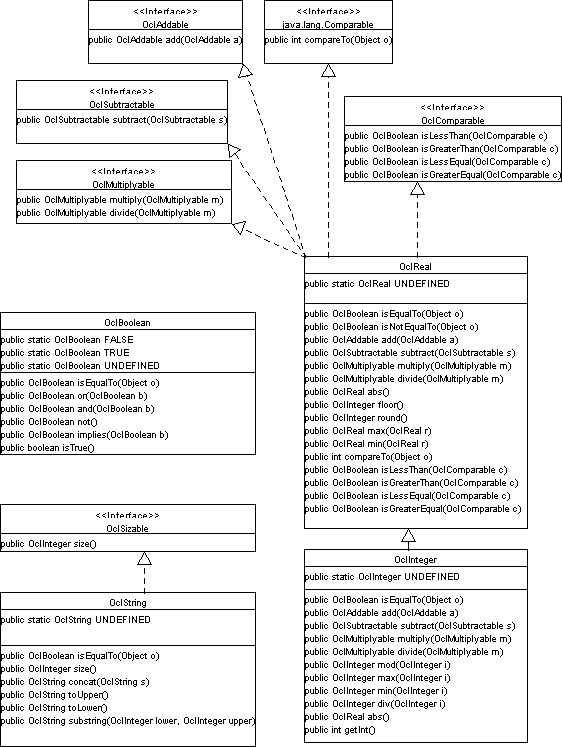
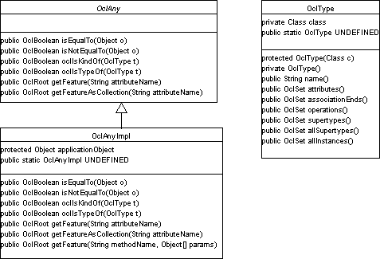
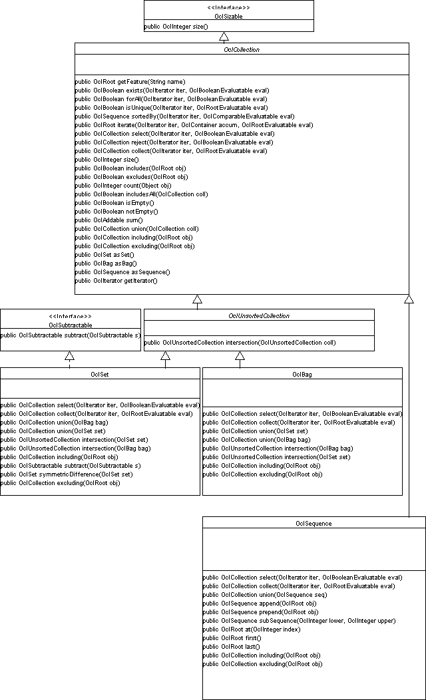
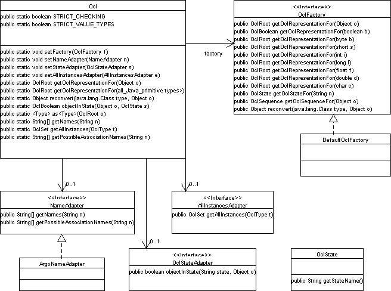

This package constitutes the OCL Class Library. The library uses the Java 2 collection framework and therefore cannot be used with JDK 1.1.
To derive Java source code from the OCL expression, all type information has to extracted from the operations of the expression. Some interfaces, like OclSubtractable, were introduced to support this.
The following class diagrams should give a basic idea of the design. The diagrams are produced with the open-source case tool Argo/UML, that was also used for code sceleton generation.
This diagram shows OclRoot, the root interface of the class library, and the classes implementing it directly. All classes of the library that represent predefined OCL types implement OclRoot.

OCL data types are the basic types (above), application-specific types (below) and collection types.


The Collection-Related Types are a central part of OCL predefined classes. The classes that represent them in the class library are shown in the diagram above.
The diagram below shown classes necessary to implement the "iterating methods" (i.e. methods having an OCL expression as argument) of OCL.


The class Ocl provides class methods that access a factory class to generate OCL
class library representations for application objects and values (e.g.
OclInteger for int, OclAny for application classes, OclSet for application
collections).
Similar plug-in objects are used to make the library adaptable to a code
generators schemes for state diagram representation and to name conversions.